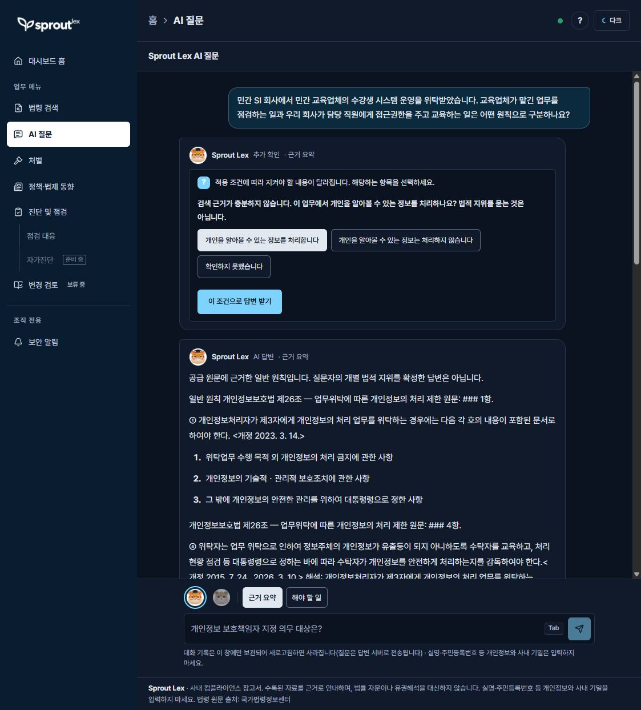

2026-11-20 · 8개 업무 질문 / 12개 입력조건 · 회귀시험 977개 통과. 이번 후속 신규 생성 6회 · 토큰 계수 6회 · 자동 재시도/GPT 0.
운영 반영·확인 완료: 81e1fc81a04e698b05dcf44bd04ac97f40b5952b
같은 질문에서 필요한 사실을 고른 뒤 실제 답변이 표시됐습니다. 이 화면의 사실 선택은 합성 시험 입력입니다.

원문과 해설은 펼쳐서 볼 수 있습니다. 같은 질문의 사실 선택 시험을 별도 질문 수로 부풀리지 않았습니다. 비교 전후가 같으면 한 번만 표시합니다.
우리는 민간 SI 회사입니다. 고객사 유지보수용 관리자 계정을 협력사 직원 두 명이 함께 쓰자는 요청을 받았습니다. 계정을 새로 발급하는 것과 이미 발급된 계정을 공유하는 것을 구분해서 원칙을 설명해 주세요. 고객사가 공공기관인지는 확인하지 않았습니다.
검사 통과 설명 6개 / 보류 0개 — 정답 수가 아닙니다.
우리는 민간 SI 회사이고 고객사에서 맡긴 시스템을 운영합니다. 장애 분석을 위해 이용자 개인정보가 든 운영 자료를 개발자 노트북에 복사하고 외부 협력사에 보내려 합니다. 복사·반출·제공이 모두 같은 행위인지 단정하지 말고, 위탁받은 목적 범위와 안전조치에 관해 확인할 일반 원칙을 설명해 주세요.
검사 통과 설명 5개 / 보류 0개 — 정답 수가 아닙니다.
우리 민간 SI 회사는 고객사의 문서관리 시스템을 운영합니다. 이용자의 열람 기록을 보존하라는 지침이 있는데, 장애 분석을 위해 기록을 외부 협력사로 반출할 수 있다는 뜻인가요? 기록 보존 의무와 외부 제공의 근거를 구분해서 일반 원칙을 알려 주세요.
검사 통과 설명 4개 / 보류 0개 — 정답 수가 아닙니다.
우리 민간 개발회사는 견적 상담을 위해 연락처를 수집했습니다. 상담이 끝난 뒤 계열사에 명단을 제공해 광고에 쓰려 합니다. 처음 수집한 목적과 나중에 제공·이용하는 목적을 구분해 확인할 원칙을 설명해 주세요. 아직 별도 동의는 받지 않았습니다.
검사 통과 설명 5개 / 보류 0개 — 정답 수가 아닙니다.
민간 SI 회사에서 민간 교육업체의 수강생 시스템 운영을 위탁받았습니다. 교육업체가 맡긴 업무를 점검하는 일과 우리 회사가 담당 직원에게 접근권한을 주고 교육하는 일은 어떤 원칙으로 구분하나요?
검사 통과 설명 0개 / 보류 0개 — 정답 수가 아닙니다.
웹 서버의 일반 오류 로그를 분석해서 화면 렌더링 속도를 높이려 합니다. 개인정보는 포함되지 않습니다.
검사 통과 설명 0개 / 보류 0개 — 정답 수가 아닙니다.
민간 SI 회사에서 민간 교육업체의 수강생 시스템 운영을 위탁받았습니다. 교육업체가 맡긴 업무를 점검하는 일과 우리 회사가 담당 직원에게 접근권한을 주고 교육하는 일은 어떤 원칙으로 구분하나요?
검사 통과 설명 0개 / 보류 0개 — 정답 수가 아닙니다.
민간 SI 회사에서 민간 교육업체의 수강생 시스템 운영을 위탁받았습니다. 교육업체가 맡긴 업무를 점검하는 일과 우리 회사가 담당 직원에게 접근권한을 주고 교육하는 일은 어떤 원칙으로 구분하나요?
시험에서 선택한 사실: 개인을 알아볼 수 있는 정보를 처리합니다 (실제 회사 사실 아님)
검사 통과 설명 5개 / 보류 0개 — 정답 수가 아닙니다.
민간 SI 회사에서 민간 교육업체의 수강생 시스템 운영을 위탁받았습니다. 교육업체가 맡긴 업무를 점검하는 일과 우리 회사가 담당 직원에게 접근권한을 주고 교육하는 일은 어떤 원칙으로 구분하나요?
시험에서 선택한 사실: 개인을 알아볼 수 있는 정보는 처리하지 않습니다 (실제 회사 사실 아님)
검사 통과 설명 2개 / 보류 0개 — 정답 수가 아닙니다.
민간 SI 회사에서 민간 교육업체의 수강생 시스템 운영을 위탁받았습니다. 교육업체가 맡긴 업무를 점검하는 일과 우리 회사가 담당 직원에게 접근권한을 주고 교육하는 일은 어떤 원칙으로 구분하나요?
시험에서 선택한 사실: 확인하지 못했습니다 (실제 회사 사실 아님)
검사 통과 설명 0개 / 보류 0개 — 정답 수가 아닙니다.
우리 민간 소프트웨어 회사는 병원의 환자 예약 시스템 유지보수 업무를 맡았습니다. 병원이 우리 회사를 감독하는 일과 우리가 담당 직원을 교육하는 일의 원칙을 구분해 주세요.
시험에서 선택한 사실: 개인을 알아볼 수 있는 정보를 처리합니다 (실제 회사 사실 아님)
검사 통과 설명 2개 / 보류 1개 — 정답 수가 아닙니다.
민간 SI 회사가 고객사의 회원 연락처를 처리하는 업무를 맡았습니다. 개인정보 처리가 포함됩니다. 고객사가 우리 회사를 감독해야 하는 일과 우리 회사가 소속 담당자의 접근권한을 관리하는 일을 구분해 주세요.
검사 통과 설명 3개 / 보류 0개 — 정답 수가 아닙니다.
운영 사용이 가능하다는 판단과 모든 법률 질문을 빠짐없이 정확히 답한다는 보장은 다릅니다. 누락된 조건·새 업무 영역은 별도 회귀 항목으로 계속 관리합니다.
검색 임계값·원문 자격·숫자 검사는 완화하지 않았습니다. 원출력·인용·최종 배달 해시를 대조했으며 원시 계정/환경/비공개 후보는 게시하지 않습니다.